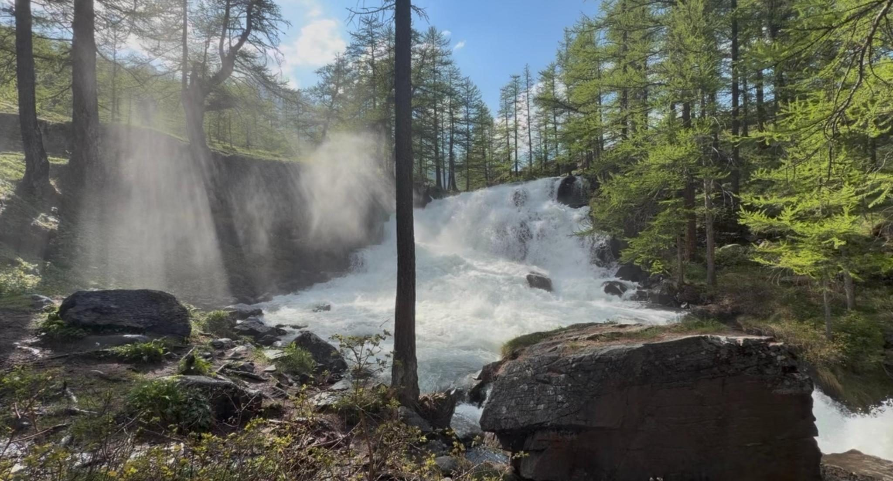
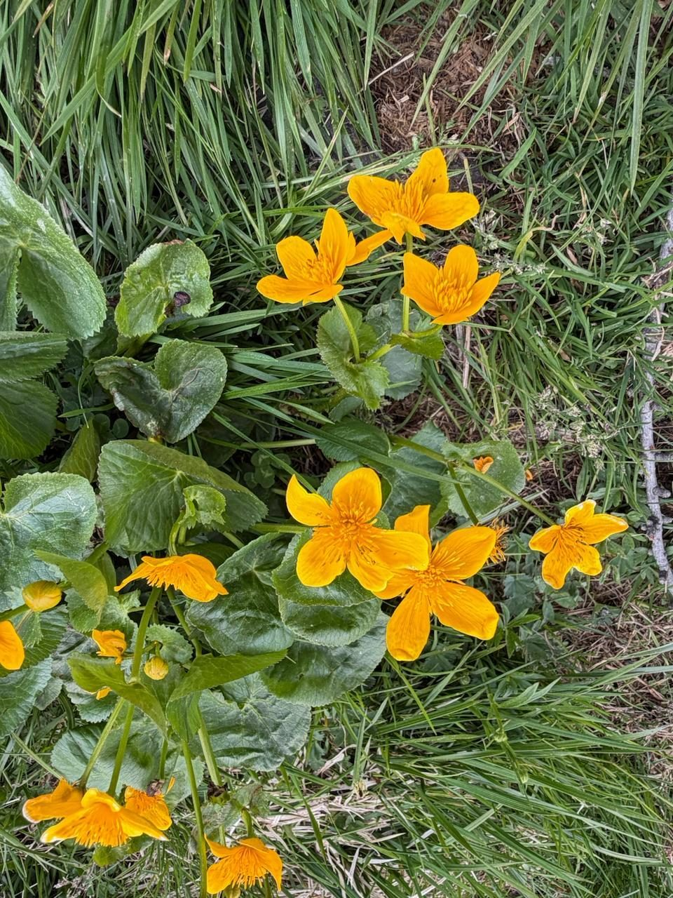

FAQ
Questions fréquentes
Les questions qui reviennent le plus souvent, et ce que nous pouvons en dire aujourd’hui. Si la vôtre n’y figure pas, écrivez-nous.
L’association et sa gouvernance
Comment garantir un fonctionnement exemplaire au sein d’Alliance Synoïa ?
Créer une association, selon les lois des pays, nécessite un organigramme (un président, un vice-président, un trésorier, etc.). Pour autant, aucun des responsables de l’association n’a la vocation de s’approprier des avantages. Tous remplissent des fonctions précises et les décisions sont collégiales. Tous sont bénévoles dans le cadre de l’administration d’Alliance Synoïa. Le Conseil d’administration de l’association-mère est franco-suisse à parts égales.
Par ailleurs, les statuts sont très clairs sur le sujet et la transparence sur le fonctionnement est limpide. Ensuite, dans la mesure où nous avons déposé des dossiers d’agrément d’utilité publique en Suisse et d’intérêt général en France, le fisc va éplucher le fonctionnement de l’association et l’avoir toujours en observation. Il y a là peu de place pour quelque dérive que ce soit.
Enfin, le lieu nécessite la présence 24h/24 de plusieurs personnes pour son fonctionnement tout au long de l’année. Là encore les conditions de leur hébergement sont claires. Les membres du CA n’habitent pas sur place.
Pourquoi un lieu en France pour une association dont le siège est en Suisse ?
Nous avons cherché dans de nombreuses vallées alpines, en Suisse comme en France, le lieu idéal pour la première Alliance Synoïa. En Suisse, il s’est rapidement révélé que les prix immobiliers pour la structure dont nous avons besoin seraient 8 à 10 fois plus chers que celui, équivalent, que nous avons trouvé en France, après avoir sillonné 3 départements alpins.
Ce projet, né en France, a tout de suite trouvé une pleine collaboration en Suisse, à travers les réseaux d’entraide Solaris des deux pays. C’est un projet que nous considérons comme bicéphale, les équipes des deux pays travaillant main dans la main à sa réalisation. Deux associations ont été créées ensemble le même jour : Alliance Synoïa, dont le siège est à Genève, et Alliance Synoïa France.
Pourquoi avoir demandé des agréments au fisc ?
La levée de fonds nécessaire à rendre opérationnelle Alliance Synoïa s’effectue dans plusieurs pays, dont la Suisse et la France où les deux premières associations ont été créées. C’est pourquoi nous avons demandé les agréments d’utilité publique et d’intérêt général, afin de pouvoir défiscaliser les dons.

Le lieu
Y a-t-il un aéroport à proximité si vous faites venir des personnes de l’international ?
Oui. Il y a un aéroport international à un peu plus d’une heure de route l’été et 1h50 l’hiver. Il y a également une gare TGV desservant Paris en 4h, à 1h de route l’hiver et 25 minutes l’été.
Comment les gens vont-ils rejoindre le lieu en haute montagne, surtout pendant les 5 mois d’enneigement ?
Que ce soit par train ou en avion, l’accès est assuré (voir la question ci-dessus). Par la route, la première ville avec une gare est à 20 minutes. Des navettes sont disponibles en période non enneigée et une route y mène en voiture. L’hiver, la route est quotidiennement déneigée s’il y a lieu. L’accès est toujours possible, sauf exceptionnellement en cas d’avalanche ou d’éboulement.
Pourquoi s’installer à une telle altitude ?
Ce n’était pas une volonté, mais nous recherchions un lieu énergétiquement fort et les synchronicités et nos besoins nous y ont emmenés. Une large part de notre travail concernera la recherche des équilibres de la biodiversité, en collaboration avec plusieurs associations ou institutions, en Suisse comme en France. Le massif alpin est un laboratoire du Vivant en conditions difficiles, parfait pour des recherches et des expériences avancées, tant en terme d’agriculture que d’équilibre avec la faune.
Le quotidien et la méthode
Quel sera le quotidien dans les lieux qui incarneront Alliance Synoïa ?
Les chercheurs, les scientifiques, les penseurs, les sages des peuples premiers qui viendront dans le nid d’aigle de l’Alliance Synoïa vivront ensemble le temps d’élaborer les travaux pour lesquels nous les auront fait venir des quatre coins du monde.
Au quotidien ils seront immergés dans leurs échanges, que ce soit en se restaurant, en discutant le soir devant un feu, en travaillant autour d’une table, en échangeant au cours d’une marche dans la montagne…
Nous les aideront à créer l’intimité et le convivialité nécessaires à ce travail en profondeur et nous favoriserons le décloisonnement des disciplines auquel aspirent nombre d’entre eux.
Nous diffuserons largement et gratuitement via un studio web-TV les entretiens que nous solliciterons et les avancées des travaux réalisés. La transmission des savoirs étant un de nos objectifs premiers.
Comment pensez-vous concrétiser le travail réalisé par Alliance Synoïa au sein de la société ?
Nous évaluons qu’une transition positive a déjà commencé, qui va considérablement s’accélérer, malgré les apparences entretenues par les médias. L’état actuel de la géopolitique reflète dans tous ses excès ce changement de paradigme en cours. Ce contexte que nous avons largement anticipé et dans lequel nous sommes acteurs, facilitera considérablement l’ouverture aux propositions que nous ferons.
Toutefois, si cette transition tardait à s’imposer, par nos réseaux et notre stratégie, nous avons prévu de nous donner les moyens de favoriser l’introduction de nos propositions dans les diverses structures décisionnaires, à commencer par les régions.
N’êtes-vous pas en train de vouloir imposer à quelques-uns votre vision du monde au plus grand nombre sans leur demander leur avis ?
Les modèles, les visions et les feuilles de route que nous allons élaborer, par les collaborations internationales et les expériences de terrain, ne pourront jamais être imposés. Ils seront le fruit des sagesses et des compétences du monde entier, que nous aurons rassemblées. Ce qui naîtra de ce travail sera proposé et ce sont les peuples ou leurs représentants, selon les structures à venir, qui décideront s’ils en veulent ou non.
Nous pensons que les constats qui se généralisent au sein des populations occidentales favoriseront nettement le besoin de ne plus reproduire le passé et d’aller sans crainte vers le nouveau. C’est cela qu’Alliance Synoïa anticipe.
L’adhésion
À combien s’élève l’adhésion à l’association, et en quoi consistent les activités des adhérents ?
L’adhésion annuelle a été fixée à 17 euros ou 17 francs suisses selon le pays. L’année comptable des associations court du 1er avril au 31 mars. La première adhésion cette année 2026 est offerte à tous. Même si elle n’offre pas encore d’activité réelle, elle nous soutient auprès des administrations fiscales des deux pays.
Concernant les activités possibles des adhérents de l’association, où qu’ils soient en Suisse ou en France, nous les détaillerons dès que nous seront opérationnels. Mais chaque chose en son temps.
Adhésion
Vous voulez nous rejoindre ?
17euros ou francs suisses par an, selon le pays
La première adhésion, cette année 2026, est offerte à tous.

Note de travail, à retirer avant la mise en ligne
Les dix questions et leurs réponses sont les tiennes, mot pour mot.
De moi : le regroupement en quatre thèmes et la phrase d’introduction. Rien d’autre.